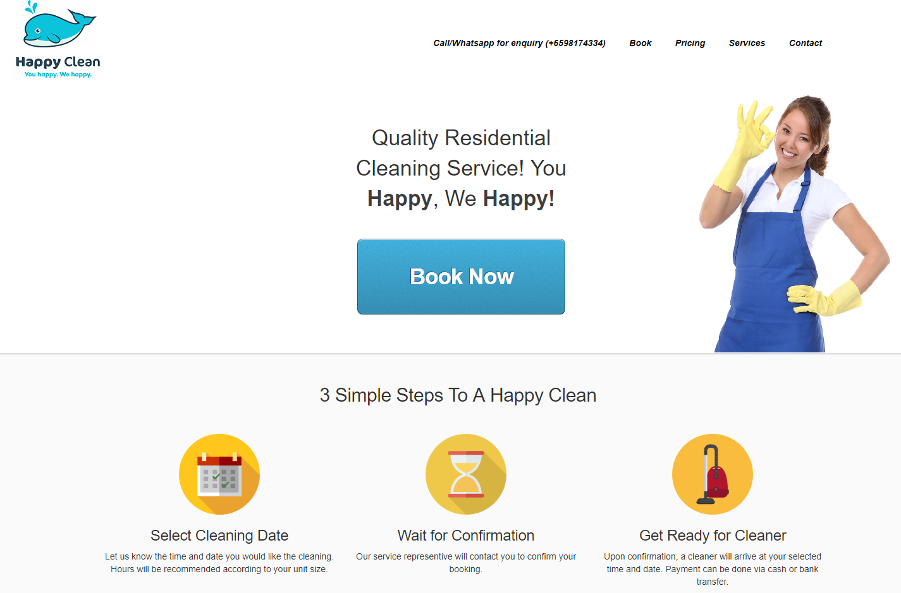

Happy Clean Pte Ltd
Co-Founder
Happy Clean Pte Ltd is a cleaning services that I started out with a good friend of mine to provide jobs to housewives. We started out with the intention of helping our mothers find jobs, and decided to start a company to gain firsthand experience of starting out a business.
Team
Tan Chong Yong
Lewis Poh
My Role
Managing Digital Assets
Search Engine Optimization (SEO)
Supporting Daily Operations
Methods
Sketching
Mockups
Guerilla Testing